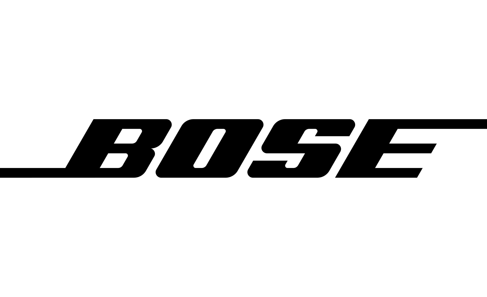

experience
Tesla
Controls Engineering Intern
Worked on controls and automation for automated manufacturing systems, with a focus on PLC programming, equipment commissioning, industrial robotics, and electrical debugging.
2-Axis Servo Gantry
Developed Siemens S7 PLC ladder logic for an X-Z servo gantry pick-and-place system, coordinating servo positioning, machine sequencing, sensor interlocks, and pneumatic actuator control.
Siemens S7 / TIA Portal / Servo Motion
Manufacturing Equipment Commissioning
Commissioned automated manufacturing stations through I/O validation and troubleshooting of electrical, mechanical, and PLC control systems.
PLC / FANUC / Electrical Schematics / I/O

Bose
Concept Prototyping
Worked on electrical design, prototyping, and testing for early-stage hardware concepts.
Differential Microphone Pre-Amplifier
Designed and prototyped a differential microphone pre-amplifier PCB for audio hardware development.
PCB Design / Analog Circuits / Prototyping
Hardware Prototyping
Built and tested electrical prototypes to evaluate early-stage hardware concepts and support design development.
Circuit Design / Testing / Prototyping
Johnson & Johnson MedTech
Surgical Robotics Electrical Engineering Co-op
Worked on electrical hardware development and prototyping for surgical robotic systems, including circuit design, PCB development, and hardware testing.
Power Distribution Unit Redesign
Contributed to the redesign of a power distribution unit through circuit simulation, component selection, and PCB development.
Altium Designer / LTspice / PCB Design
Electromagnetic Tracking Prototype
Developed an electromagnetic sensor tracking prototype using sensing coils, signal conditioning circuitry, and data acquisition hardware.
Analog Circuits / ADC / Hardware Prototyping